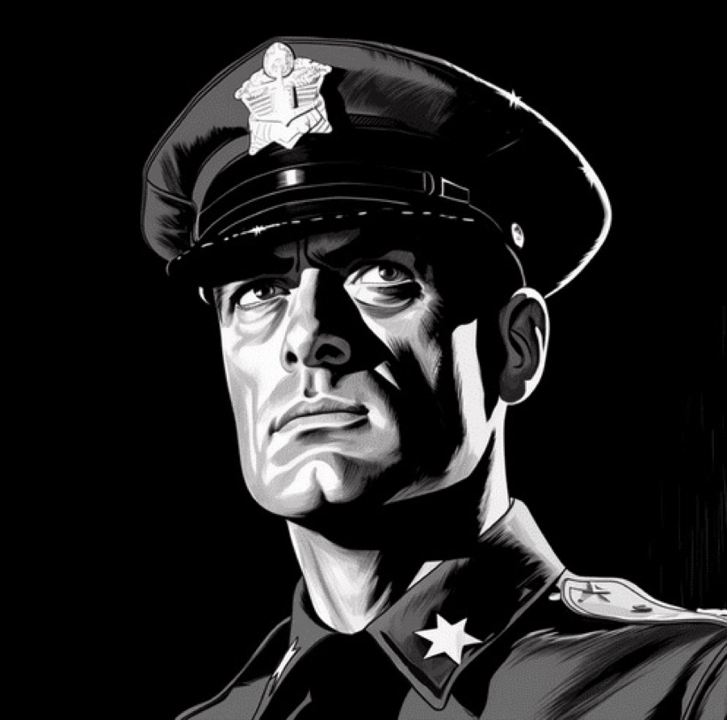
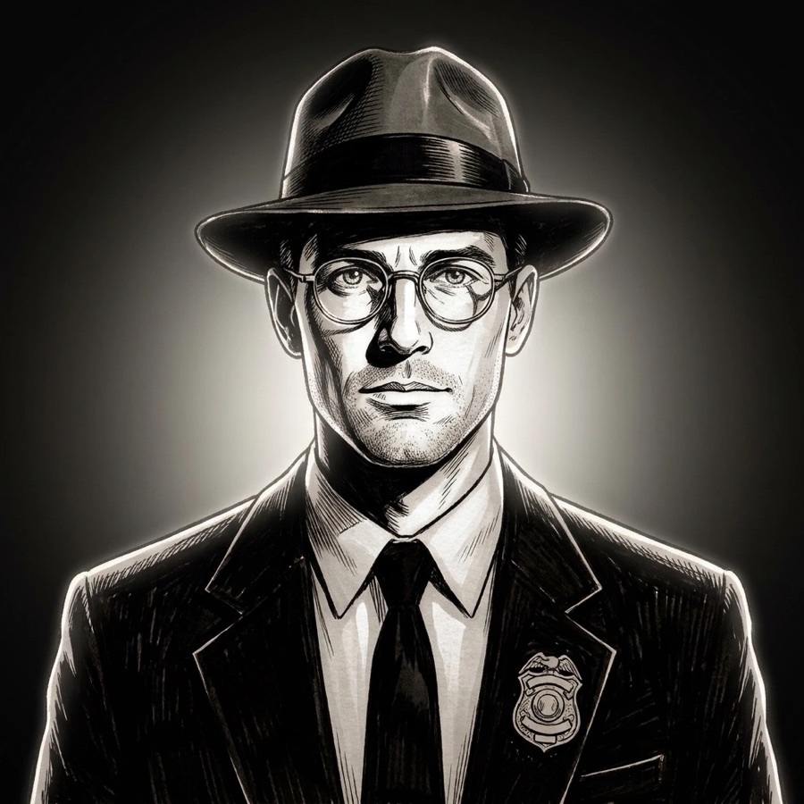
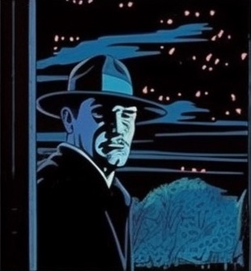
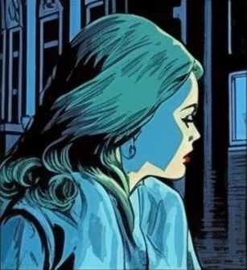
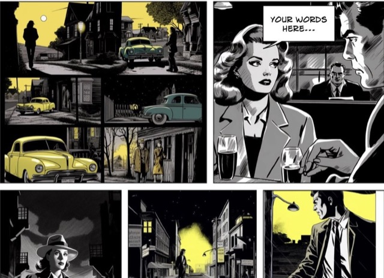
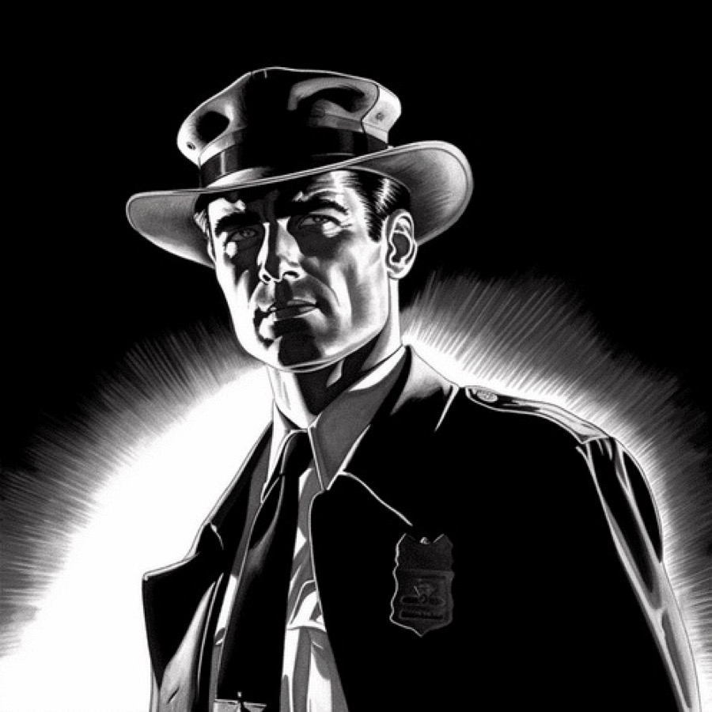
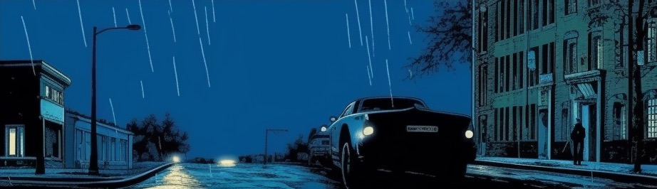

Choose your view:


-
Look
Study the reference and notice the details.
On The Precinct
-
Define
Build a character and write your brief.
On The Precinct
-
Create
Use your AI tool to make the image.
In your AI tool -
Build
Turn your images into a comic page.
Back at The Precinct
-
Improve
Compare, fix and try again.
Back at The Precinct
Case 01
Build your character
On The Precinct
Study the reference
Look closely at the character below. What do you notice?
Short notes are fine. They go with you to “Write what you notice”, where they become your description.
On The Precinct
Choose a character
Seven characters, one story: four inside the precinct, three outside it, and the café where their paths cross. Pick who you’re drawing, and choose the café too if that is where they are. Their look goes into every prompt word for word: it’s what keeps them recognisable from picture to picture.
On The Precinct
Choose a palette
Noir here is always monochrome, but the 2023 comic wasn’t only yellow: it ran in five palettes. Choose one, and it goes into every prompt, ending no other colours
. When a palette isn’t pinned down, Gemini drifted to sepia in testing.
On The Precinct
Write what you notice
Look before you ask for anything. Write what you see, then the details, then the world around it. The desk reads this before it writes your brief.
On The Precinct
Get your brief
Build the prompt for your next image. You describe it. The Precinct helps sharpen it. Your AI image tool makes it.
Which image tool will you use?
The brief is tuned for the tool you pick. Use the one your teacher or facilitator has approved.
Add to your description if you like (), then send it again. Or send it as it is: this time the desk writes your brief either way.
Your briefing
The brief is your AI image prompt: the words you paste into your image tool.
From the filesThe desk is swamped, so this is a stock brief, not one written for your idea. Make it yours: swap in your own words before you paste it. Tell your facilitator: the desk’s AI account needs attention.
Why this works
On another platform
Watch for
Prompt copiedNext: paste it into your AI image tool and make the picture.
In your AI image tool
Make the image
This step happens somewhere else. The Precinct writes the words; your AI image tool makes the picture. Keep this tab open so you can come back.
- On The PrecinctCopy your AI image prompt, below.
- In your AI image toolPaste the prompt and make your image.
- In your AI image toolSave the picture. Keep it, even if it missed.
- Back at The PrecinctReturn to this tab and compare it with what you asked for.
Prompt copiedNow paste it into your AI image tool. This tab will wait for you.
Image tools: each link opens another service in a new tab Gemini · ChatGPT · Copilot · Nano Banana (in Google AI Studio) · Midjourney (paid, demo only)
Use the tool your teacher or facilitator has approved. The Precinct cannot see what you make there.
Back at The Precinct
Compare it
Put your picture next to what you asked for. Three questions first:
- What stayed the same?
- What changed or went missing?
- Which one thing will you change in your prompt?
- 1ReferencePick the image you’re aiming for.
- 2PromptPaste the exact words you used.
- 3ResultKeep what came back, even the misses.
- 4CompareStyle, era, people, text, light: what drifted?
- 5WhyWhich word was missing, or pulling the wrong way?
- 6ChangeChange one thing. Run it again.
The desk can’t see your picture, but your image tool can. Give it the picture it made, and only the picture, and ask:
Describe only what you see in this image, as a prompt that would recreate it.
Don’t paste your prompt into that request, or it will just hand your own words back. Then paste what it says below, and the desk puts it next to what you asked for.
Commissioner level: ask the same question about the reference picture you were aiming for. The gap between the two descriptions is the gap you are closing.
The compare check needs a workshop code. . You can still compare by eye with the questions above.
This browser remembers where you got to and what you typed. It does not follow you to another device.
Clear your notes, choices and brief for this case?
What am I learning?
- to analyse visual language
- to describe precisely
- to improve an idea by changing one thing
Levels
Teaching this?
One lesson, five steps, and what to have ready.
Run the first part from the front, then let the room work. Students look and describe on The Precinct, make the picture in the AI image tool your school has approved, and come back here to compare.
A suggested lesson: about 55 minutes
- 10minDemonstrate Look closelyOn The Precinct
Read one picture together on the References page. Demo shows worked answers; Guide lets the room agree an answer before you reveal it. - 10minBuild a character promptOn The Precinct
Students open Case 01: choose a character and a palette, write what they notice, and get a brief. - 10minGenerate an imageIn the AI image tool
Paste the prompt, make the picture, save it. - 10minCompare and improveBack at The Precinct
What stayed the same, what changed, and which one thing to change. - 15minBuild a page or share learningBack at The Precinct
The comic builder turns pictures into a page with captions and speech balloons.
Making pictures takes time, and a comic page needs several of them. Plan a second session for the page.
Students are learning to
- analyse visual language
- keep characters and scenes consistent
- evaluate the difference between what they asked for and what came back
You will see it when they
- describe a picture before they prompt: what they see, the details, the world around it
- can say which steps happen here and which happen in the image tool
- change one thing at a time, and can say why
Before the lesson
- Choose the AI image tool your school has approved, and check its age and data rules.
- Have a way in ready for the brief and the compare check: a workshop code from your facilitator, or an AI key saved on each device (see the API key page). Looking, choosing and describing need neither.
- Work through Case 01 yourself first.
- Read what this site sends and stores.
Differentiation
Three levels. Rookie: one picture. Detective: a character and a location, kept consistent. Commissioner: several panels. Each case shows the level it needs.
The link for students
heutalab.com/the-precinct/About The Precinct
All seven characters and The Ziggurat in the site’s yellow palette, as PNGs for your slides, storyboards or reference sheets. Match them with each one’s look from “Choose a character” in Case 01.



“It’s not just a comic.
It’s a case.”THE PRECINCT
Your panels.